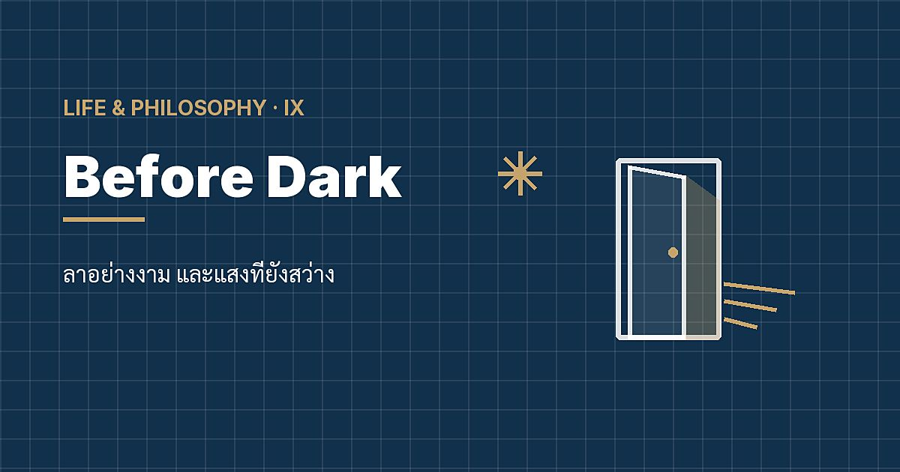
Before Dark — ก่อนมืด แสงที่ยังสว่างพรุ่งนี้
บทส่งท้ายของซีรีส์ Life Thought & Philosophy — คำขอบคุณเต็มเสียง การลาอย่างงาม และความจริงที่ซีรีส์นี้เก็บไว้บอกตอนจบ: เก้าบทความนี้ไม่เคยเกี่ยวกับวันของผมเลย
Read อ่านต่อ →OpenClaw for Organizations
Building intelligent AI systems that think, remember, and act autonomously — from foundational concepts to multi-agent production deployments.
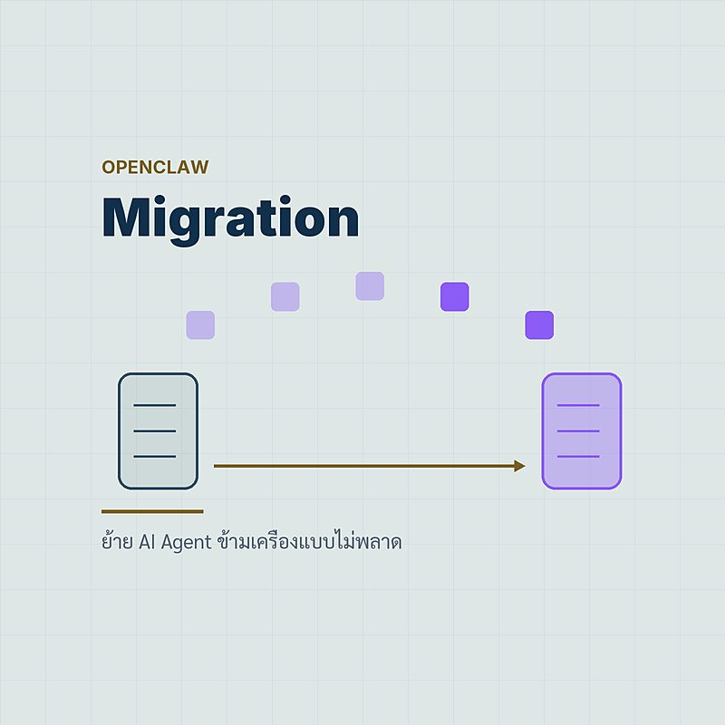
Self-Transferring OpenClaw Bot — ย้าย AI Agent ข้ามเครื่องแบบไม่พลาด 🚚
คู่มือย้าย bot จาก VPS Ubuntu ไป Mac Studio แบบ step-by-step — backup, transfer, restore พร้อม self-check script ให้ bot ตรวจตัวเอง

Idle Self-Improvement — ให้ AI Agent ดูแลระบบเองเมื่อว่าง 🔄
เปลี่ยนเวลาว่างของ AI Agent ให้ตรวจสุขภาพระบบ วิเคราะห์ Obsidian vault และค้นหาปัญหาก่อนที่คุณจะเจอเอง — ตั้งค่า 10 นาที
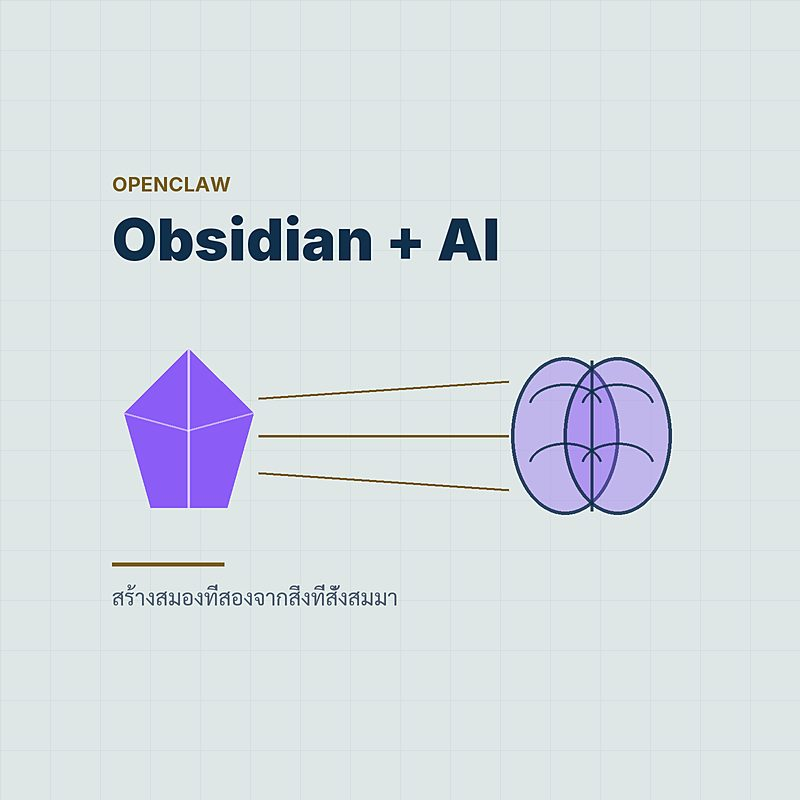
Obsidian + AI Agent = สร้างสมองที่สองที่คิดจากสิ่งที่เราสั่งสมมา 🧠
จาก Obsidian vault สู่ AI ผู้ช่วยแบบ JARVIS — memory system, proactive behavior, always-on agent และ case study จาก OpenClaw ที่รันจริง
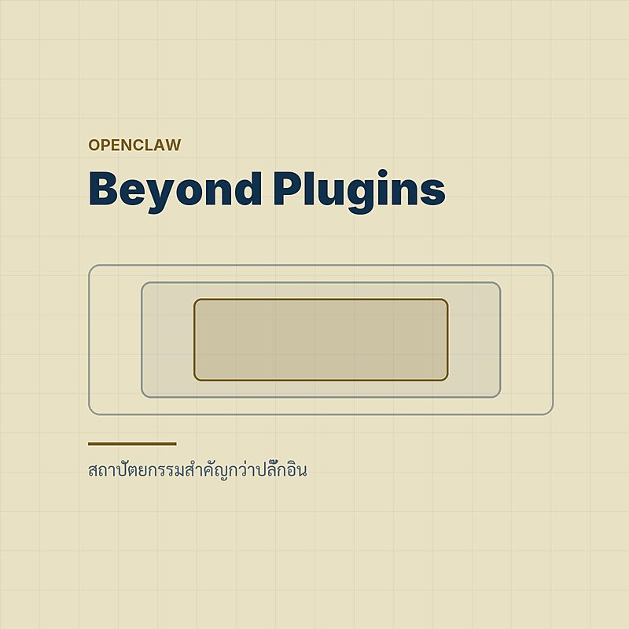
Beyond Plugins: How I Actually Use OpenClaw as a Production AI Assistant
A year of running Arthur in production — architecture over plugins, memory systems, healthcare analytics with 4.7M records, and building AI that actually works.
Claude Code Architecture Deep Dive
เจาะลึกสถาปัตยกรรม Claude Code — Tools system, Agent loops, MCP protocol, Context management และการออกแบบ AI ที่ทำงานจริงได้

Production Deployment — จาก Prototype สู่ระบบจริง 🚀
VPS setup, Docker deployment, monitoring, backup, security hardening, cost tracking — lessons จากการรัน 45 agents ใน production จริง
Skills & Automation — สอน Agent ทำงานใหม่ได้ไม่จำกัด ⚡
ClawHub marketplace, custom skill creation, SkillGuard security, ClawFlows pipelines — สร้างความสามารถใหม่ให้ AI ได้ไม่มีขีดจำกัด
Integrations & Workflows — เชื่อมต่อทุกระบบในองค์กร 🔗
Telegram, Google Workspace, GitHub, Database, Cron, n8n, Home Assistant — เชื่อม AI Agent เข้ากับระบบจริงทั้งหมด
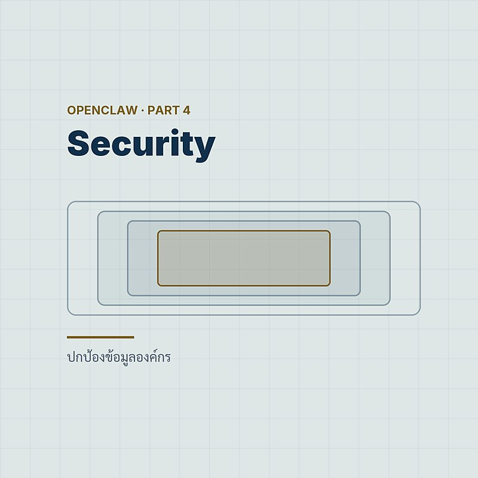
Security & Access Control — ปกป้องข้อมูลองค์กร 🛡️
Sandbox isolation, prompt injection defense, data de-identification, secret management, GUEST MODE — ปกป้อง AI Agent ไม่ให้กลายเป็นช่องโหว่
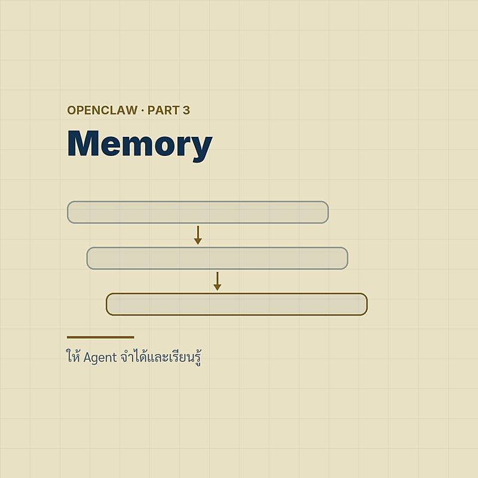
Memory & Knowledge Management — ให้ Agent จำได้และเรียนรู้ 🧠
3-layer memory architecture, daily logs, MEMORY.md, Obsidian vault, ChromaDB semantic search, heartbeat system — ให้ AI จำและเรียนรู้จากประสบการณ์จริง
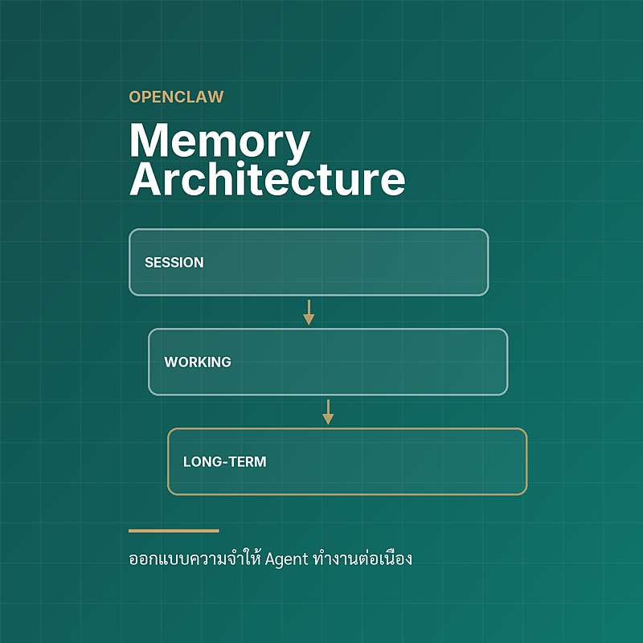
OpenClaw Memory Architecture — ออกแบบความจำให้ Agent ทำงานต่อเนื่อง 🧠
เจาะโครงสร้าง memory แบบ layered: Identity, Workspace Config, Daily Notes, Long-term Memory, governance boundary และ anti-patterns ที่ควรเลี่ยง
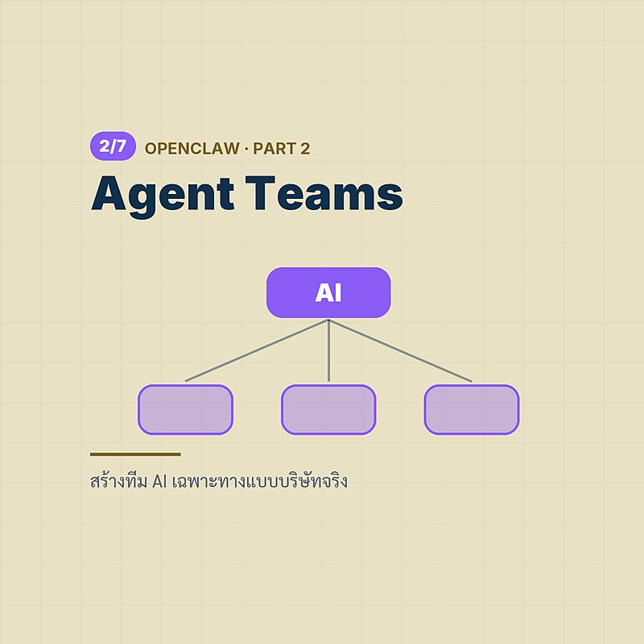
Agent Teams — สร้างทีม AI เฉพาะทางแบบบริษัทจริง 🤖
Multi-agent architecture, specialist agents 45 ตัว, model routing Opus vs Sonnet, cost ~$400\/mo — สร้างทีม AI ที่ทำงานจริงได้แบบบริษัท
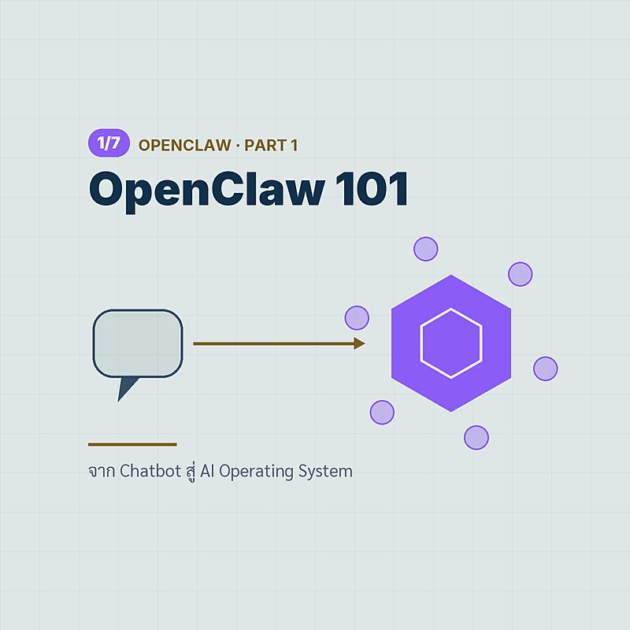
OpenClaw 101 — จาก Chatbot สู่ AI Operating System 🤖
ทำไม ChatGPT ไม่พอ? รู้จัก OpenClaw — AI ที่มี memory, personality, tools และทำงานให้จริงๆ พร้อมวิธีติดตั้งและ Use Cases สำหรับองค์กร
DevOps & Vibe Coding
A comprehensive journey through modern DevOps practices — from Git fundamentals to Kubernetes orchestration, CI/CD pipelines, and production-ready infrastructure.
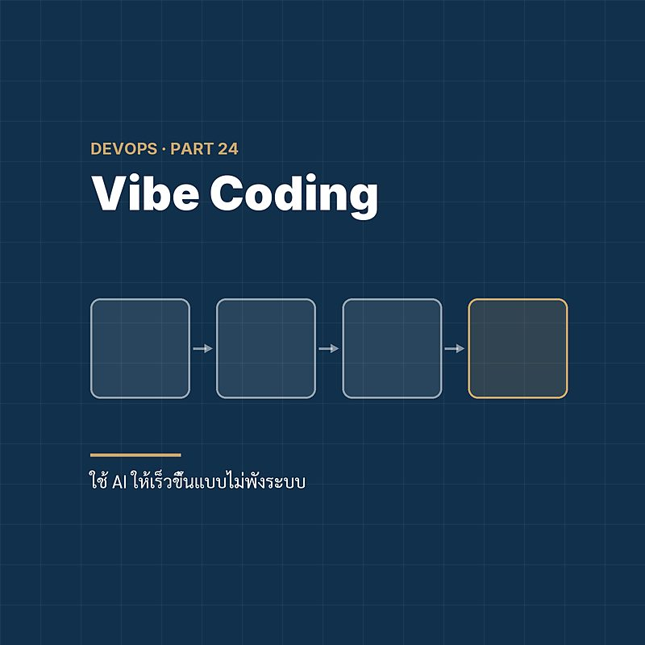
Vibe Coding in DevOps Process — ใช้ AI ให้เร็วขึ้นแบบไม่พังระบบ ⚡
คู่มือใช้งาน Vibe Coding ใน DevOps ตั้งแต่ plan → build → verify → release พร้อม use cases, guardrails และ prompt patterns ที่ใช้ได้จริง

Deployment & Hosting Strategies — จาก Code สู่ Production 🚀
เปรียบเทียบ Vercel, Netlify, Railway, VPS, Cloud — พร้อม SSL, DNS, CDN, Deployment strategies และ Production setup

Frontend Performance & Modern Frameworks — เพิ่มความเร็วและเลือก Framework ที่ใช่ ⚡
เรียนรู้ CSR vs SSR vs SSG vs ISR, React vs Vue vs Svelte, Core Web Vitals, Image Optimization, Bundle Optimization, Caching, PWA และ CSS/Font Optimization

Web Architecture & Design Patterns — ออกแบบระบบให้ Scale ได้และดูแลง่าย 🏗️
เรียนรู้ Monolith vs Microservices, MVC, Layered Architecture, Clean Architecture, REST vs GraphQL vs gRPC, Event-Driven Architecture, Message Queues และ Design Patterns สำหรับ Developer ทุกระดับ

Authentication & Authorization — ระบบยืนยันตัวตนและจัดการสิทธิ์อย่างปลอดภัย 🔐
เรียนรู้ Authentication vs Authorization, Password Security, JWT, OAuth 2.0, MFA/2FA, RBAC, และ Security Best Practices สำหรับ Developer ทุกระดับ

Database Design & SQL — ออกแบบฐานข้อมูลที่ดีและเขียน SQL อย่างมืออาชีพ 🗄️
เรียนรู้ Database Design, Normalization, SQL essentials, JOINs, Indexing, Migrations, Security และ ORM vs Raw SQL สำหรับ Developer ทุกระดับ

Automated Testing with GitHub — ทดสอบอัตโนมัติทุก Push 🧪
เรียนรู้ Static Analysis, Unit Tests, Integration Tests, E2E (Playwright), Security Scanning, Coverage Gates และ Complete Pipeline

Code Quality & Review — เขียน Code ดีๆ ที่ทีมอยากอ่าน 🔍
เรียนรู้ Linting, SOLID Principles, Code Smells, Static Analysis, SonarQube, Quality Gates และ Clean Code Practices

GitHub Actions — Automate ทุกอย่างใน CI/CD Pipeline 🤖
เรียนรู้ Workflows, Triggers, Secrets, Matrix Builds, Caching, Reusable Workflows, Security Scanning และ Self-hosted Runners

SRE — Site Reliability Engineering ที่ DevOps ต้องรู้ 🚒
เรียนรู้ SLI/SLO/SLA, Error Budgets, Incident Management, Postmortem, Toil Reduction และ Chaos Engineering

Cloud Architecture — ออกแบบระบบบน Cloud ให้แข็งแกร่ง ☁️
เรียนรู้ AWS/GCP/Azure, Well-Architected Framework, VPC, Serverless, High Availability และ Cost Optimization

GitOps & ArgoCD — Git-driven Deployments ที่ทุกคนต้องรู้ 🔄
เรียนรู้ GitOps Principles, ArgoCD, Helm Charts, Kustomize, Sealed Secrets และ App-of-Apps Pattern

Docker Compose — จัดการหลาย Containers ด้วยไฟล์เดียว 🐳
เรียนรู้ Docker Compose ตั้งแต่ services, volumes, networks ไปจนถึง multi-environment, health checks และ production patterns

Software Testing — ทดสอบยังไงให้มั่นใจก่อน Deploy 🧪
เรียนรู้ Unit Test, Integration Test, E2E Test, TDD, Code Coverage และ Testing ใน CI/CD Pipeline

DevSecOps — Security พื้นฐานที่ DevOps ต้องรู้ 🔐
เรียนรู้ OWASP Top 10, Secrets Management, Container Security, SSL/TLS, CI/CD Security Pipeline และ Server Hardening

Linux Command Line — คำสั่งพื้นฐานที่ DevOps ต้องรู้
คำสั่ง Linux ที่ DevOps ใช้ทุกวัน ตั้งแต่ไฟล์, process, permission, networking ไปจนถึง shell scripting และ cron jobs

Monitoring & Observability — รู้ทุกอย่างที่เกิดขึ้นใน System
เรียนรู้ Metrics, Logs, Traces ไปจนถึง Prometheus, Grafana, ELK Stack และการตั้ง Alert แจ้งเตือนก่อนระบบล่ม

Infrastructure as Code — จัดการ Server ด้วย Terraform & Ansible
เรียนรู้ IaC ตั้งแต่แนวคิด ไปจนถึง Terraform สร้าง infrastructure และ Ansible จัดการ configuration อัตโนมัติ

Networking พื้นฐานสำหรับ DevOps — รู้จักเครือข่ายก่อน Deploy
เรียนรู้ Networking พื้นฐานที่ DevOps ต้องรู้ ตั้งแต่ TCP/IP, DNS, Ports, Firewall ไปจนถึง Load Balancer และ Reverse Proxy

Kubernetes — จัดการ Container ให้เป็นระบบด้วย K8s
เรียนรู้ Kubernetes ตั้งแต่พื้นฐาน Pod, Service, Deployment ไปจนถึง Scaling, Self-healing และการ deploy จริง

API Request Lifecycle — เมื่อกด Send เกิดอะไรขึ้นบ้าง?
เข้าใจ API Request Lifecycle ตั้งแต่ Client ส่ง Request ไปจนถึง Server ตอบกลับ พร้อม HTTP Methods, Status Codes และตัวอย่างจริง
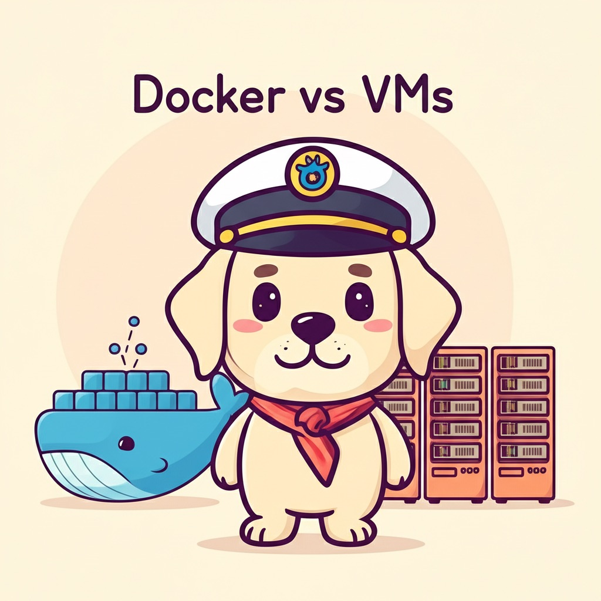
Docker Containers vs VMs — ต่างกันยังไง ใช้ตัวไหนดี?
เปรียบเทียบ VM กับ Docker Container, เรียนรู้ Dockerfile, Image, Container, Docker Compose และเมื่อไหร่ควรใช้ตัวไหน

CI/CD Pipeline — ส่ง Code ขึ้น Production แบบอัตโนมัติ
เรียนรู้ CI/CD Pipeline ตั้งแต่พื้นฐาน Build, Test, Deploy อัตโนมัติ ไปจนถึง GitHub Actions, deployment strategies, และ Best Practices
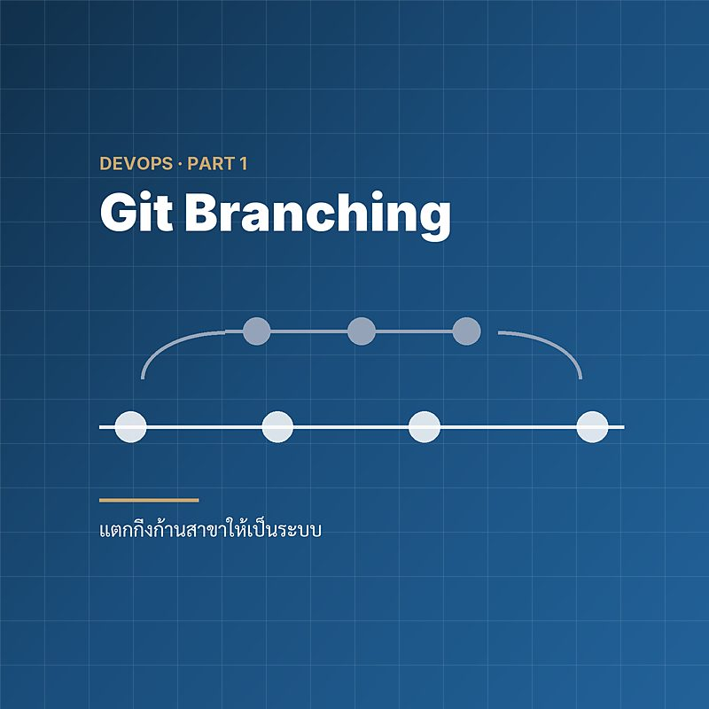
Git Branching — แตกกิ่งก้านสาขาให้เป็นระบบ
เรียนรู้การใช้ Branch ใน Git ตั้งแต่พื้นฐาน ไปจนถึง Merge, Conflict, และ Branching Strategy ยอดนิยมอย่าง Git Flow, GitHub Flow
Life Thought & Philosophy
Essays on living well — one whole day in nine essays, grown from the book One Day of Light — ความเรียงว่าด้วยการใช้ชีวิต เดินครบทั้งวันตามหนังสือ «แสงของวันหนึ่ง» — เช้า เที่ยง และสนธยา อ่านได้ทั้งภาษาไทยและอังกฤษ สลับภาษาได้ในทุกบทความ
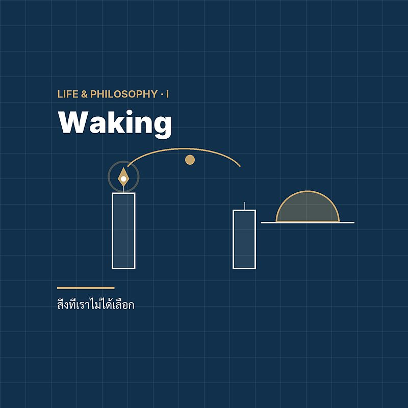
Waking — ตื่น สิ่งที่เราไม่ได้เลือก 🕯️
นาทีแรกของวันเต็มไปด้วยของที่เราไม่ได้เลือก — ว่าด้วยความกตัญญู แสงที่ยืมมา และเหตุผลที่ไม่มีใครสร้างตัวเองได้จริง
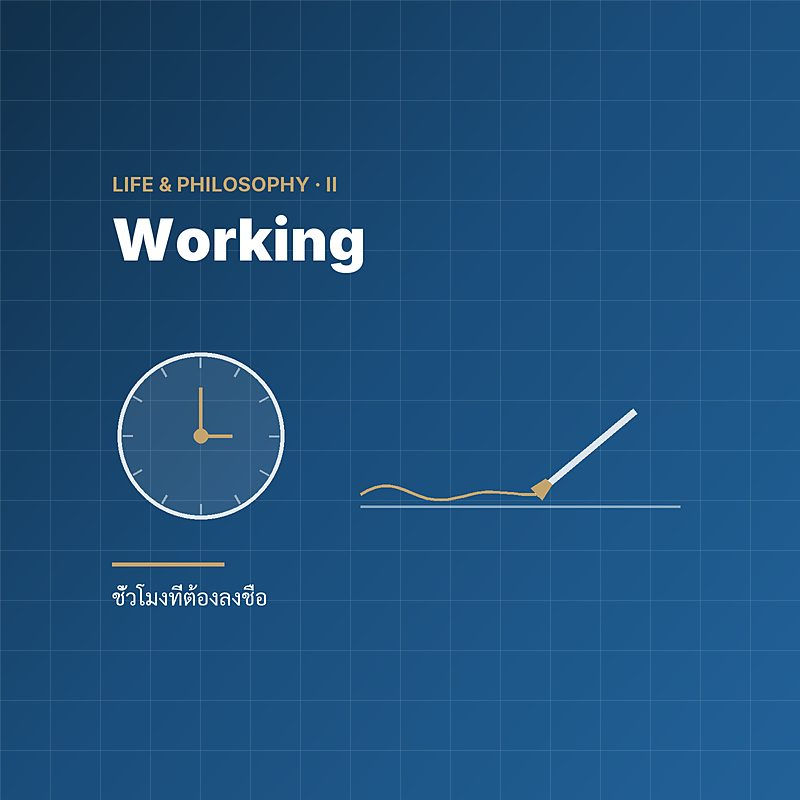
Working — ลงมือ ชั่วโมงที่ต้องลงชื่อ ✍️
เวลาเป็นทรัพย์สินแท้จริงชิ้นเดียวของเรา — ตรงต่อเวลา ลงชื่อกับการตัดสินใจของตัวเอง และลบคำว่า «รู้งี้» ออกจากชีวิต
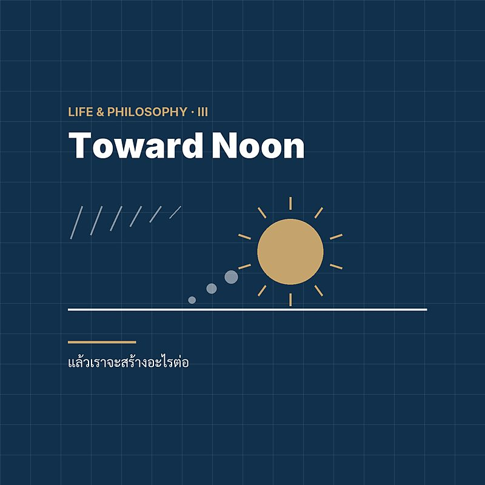
Toward Noon — เข้าใกล้เที่ยง แล้วเราจะสร้างอะไร 🌄
ฟ้าหลังฝนไม่ได้ปฏิเสธว่าฝนเคยตก — การยอมรับโดยไม่ยอมจำนน ความเงียบที่ทำงานหนักกว่าคำพูด และวินาทีที่ยามเช้ากลายเป็นเที่ยง
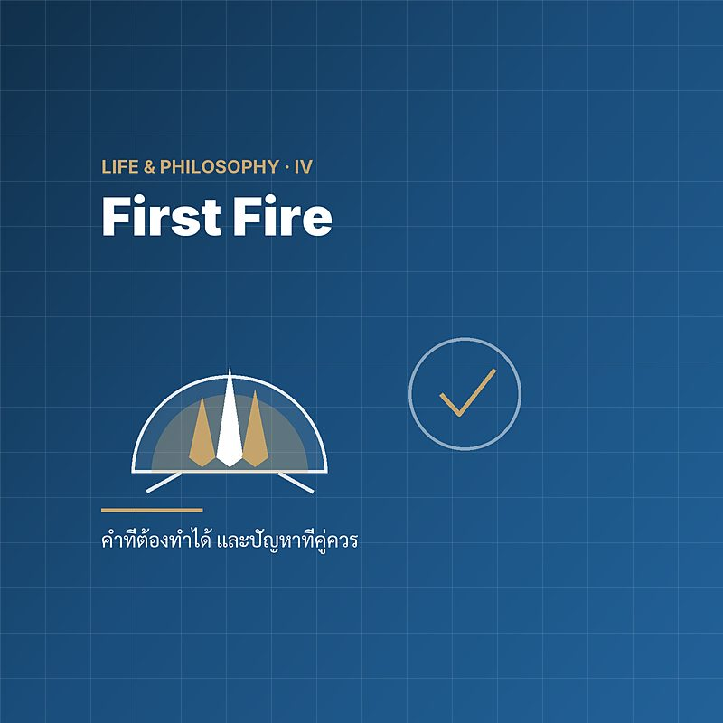
First Fire — ไฟกองแรก คำที่ต้องทำได้ และปัญหาที่คู่ควร 🔥
เที่ยงวันเริ่มด้วยไฟสองกอง — คำพูดที่เป็นเลขตรวจทานของเรา และปัญหาที่คู่ควรกับหนึ่งปีของชีวิต
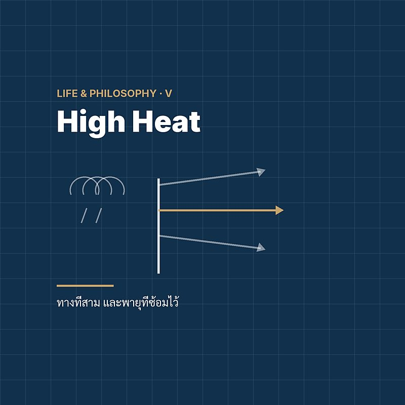
High Heat — กลางเปลวแดด ทางที่สาม และพายุที่ซ้อมไว้ 🛤️
ทางแยกที่บอกว่ามีสองทาง มักสำรวจมาไม่จบ — ว่าด้วยทางที่สาม แผนสามฟ้า และงานที่กล้าส่งทั้งที่ยังมีรอยร้าว
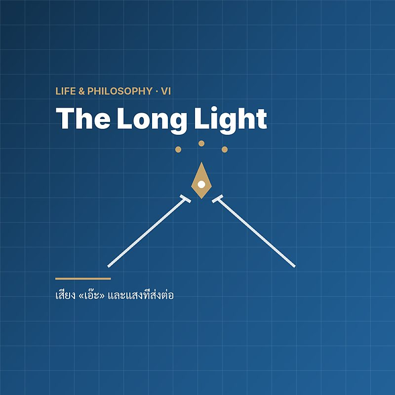
The Long Light — แดดเริ่มยาว เสียง «เอ๊ะ» และแสงที่ส่งต่อ 🔦
สัญชาตญาณหนึ่งพยางค์ที่ควรได้สิทธิ์หยุดนาฬิกา และเหตุผลที่ความรู้ยิ่งให้ยิ่งเพิ่ม — ระบบทุกระบบถูกแทนที่ แต่คนที่เราสอนยังทำงานอยู่
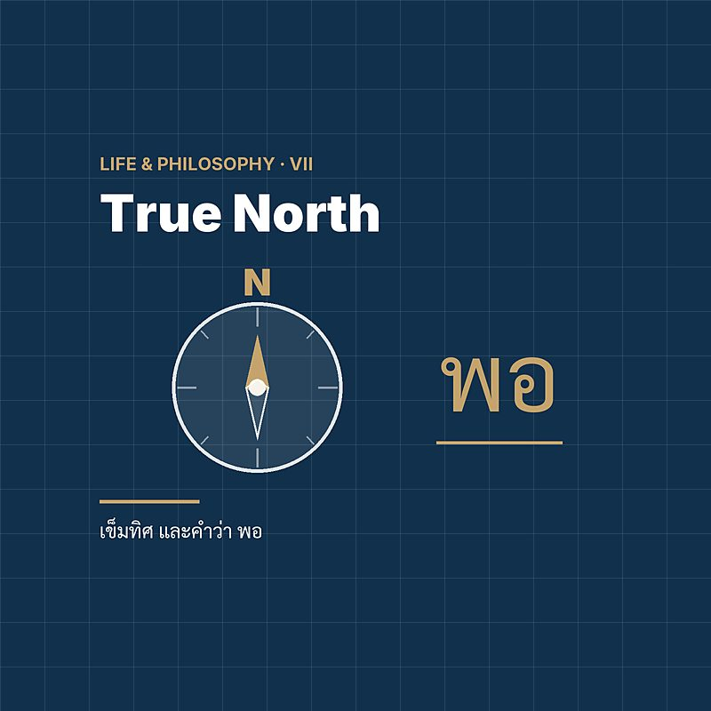
True North — ทิศเหนือของใจ เข็มทิศ และคำว่า «พอ» 🧭
แผนที่ทุกแผ่นหมดอายุ แต่เข็มทิศที่ไม่เคยอัปเดตกลับใช้ได้เสมอ — ศีลประจำใจห้าข้อ และเลขคณิตของคำว่า พอ
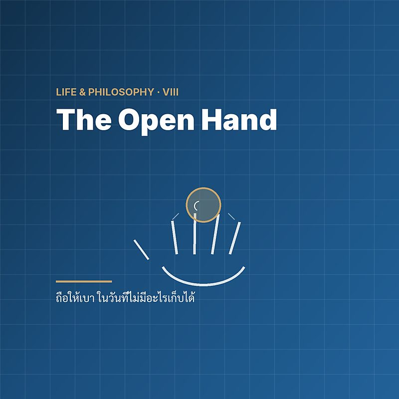
The Open Hand — มือที่คลายออก ถือให้เบาในวันที่ไม่มีอะไรเก็บได้ 🤲
แก้วที่แตกแล้วของหลวงพ่อชา ตำแหน่งที่ถอดออกเหมือนเสื้อ และความไม่จีรังในฐานะกลไกตั้งราคาของชีวิต
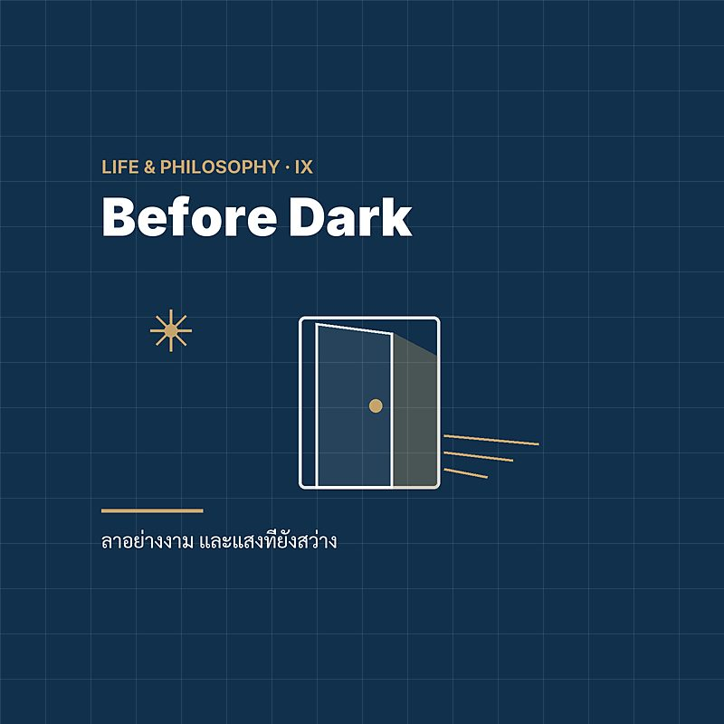
Before Dark — ก่อนมืด ขอบคุณเต็มเสียง และลาอย่างงาม 🌟
บทส่งท้าย — คำขอบคุณที่ต้องส่งก่อนที่อยู่จะหมดอายุ การปิดระบบอย่างงาม และกลลวงไม้ตายที่ซีรีส์นี้เฉลยตอนจบ